GGD · Roma Aviamentos · 29 de setembro de 2026
Levantamos a hipótese de que a exigência de cadastro antes da compra estaria segurando as vendas. Para responder, percorremos o caminho inteiro de compra — buscar, escolher a cor, colocar no carrinho, calcular o frete e clicar em pagar — em seis lojas concorrentes, com prints de cada tela. Esta página mostra o que encontramos.
A resposta curta
Nenhuma das seis concorrentes deixa comprar sem se identificar. A exigência de cadastro não é o que separa a Roma do mercado — é o padrão do setor inteiro.
Mas o teste achou outra coisa, e essa sim separa: o que cada loja coloca no lugar mais nobre do carrinho, logo acima do botão de pagar. A Roma coloca um aviso vermelho de 494 pixels falando em trocas e devoluções. O Armarinho São José não coloca nada — o botão fica a 69 pixels do subtotal. O Ladeira coloca um incentivo para comprar mais. Tudo isso está fotografado adiante.
Sem contar com o que a loja diz de si mesma — percorremos como cliente.
Em cada loja fizemos o mesmo caminho, sem estar logados: buscar "linha para costura", abrir o produto, escolher uma cor, colocar no carrinho, pedir o cálculo de frete e clicar no botão de pagar. Paramos exatamente na tela em que a loja pede a identificação — nenhum dado pessoal foi digitado em nenhuma delas. Cada tela desta página é uma foto real desse percurso, feita em 29 de setembro de 2026.
| Loja | Onde fica | Vende online? | O que é |
|---|---|---|---|
| Roma Aviamentos | São Paulo/SP (Brás) | Sim | Nós |
| Armarinho São José | Londrina/PR | Sim | Maior loja online do nicho, mesma plataforma da Roma |
| Aviamentos São Paulo | São Paulo/SP (Brás) | Sim | Mesma plataforma da Roma |
| Armarinhos Partata | Ribeirão Preto/SP | Sim | Mesma plataforma da Roma |
| Ladeira Armarinhos | São Paulo/SP (Brás) | Sim | Plataforma VTEX — a loja mais bem montada do teste |
| AF Aviamentos | S. J. do Rio Preto/SP | Sim | Plataforma Loja Integrada |
| Armarinhos Fernando | São Paulo/SP (25 de Março) | Não | 18 lojas físicas e nenhuma venda online — o site é institucional |
Descoberta lateral que vale registrar: o Armarinhos Fernando, a maior rede do país no segmento, com 18 lojas e 49 anos, não vende pela internet. O site dele só mostra endereços das lojas e o cartão próprio. Quem compra aviamento online no Brasil não tem tantas opções quanto parece.
As seis lojas param o cliente antes do pagamento. O que muda é quantos dados elas pedem ali.
| Loja | Preço sem login | Carrinho sem login | Frete sem login | Para pagar | O que pede na porta | Entrar com Google/Facebook |
|---|---|---|---|---|---|---|
| Roma | Sim | Sim | Sim | Identificação | E-mail, CPF ou CNPJ + senha | Sim, os dois |
| Armarinho São José | Sim | Sim | Sim | Identificação | E-mail, CPF ou CNPJ + senha | Não tem |
| Aviamentos São Paulo | Sim | Sim | Sim | Identificação | E-mail, CPF ou CNPJ + senha | Sim, os dois |
| Armarinhos Partata | Sim | Sim | Sim | Identificação | E-mail, CPF ou CNPJ + senha | Não tem |
| AF Aviamentos | Sim | Sim | Sim | Identificação | E-mail ou CPF/CNPJ — e a loja avisa que cria a conta sozinha | Sim, os dois |
| Ladeira Armarinhos | Sim | Sim | Sim | Identificação | Só o e-mail. Sem senha, sem CPF | Não exibe |
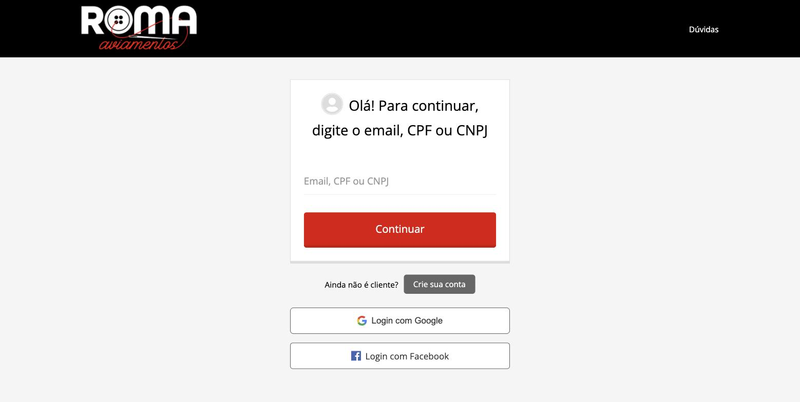
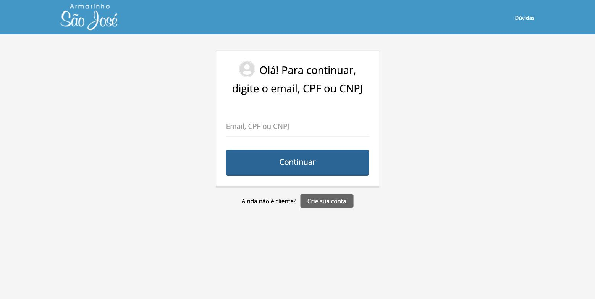
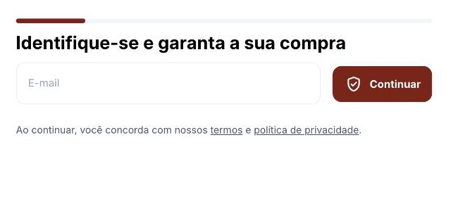
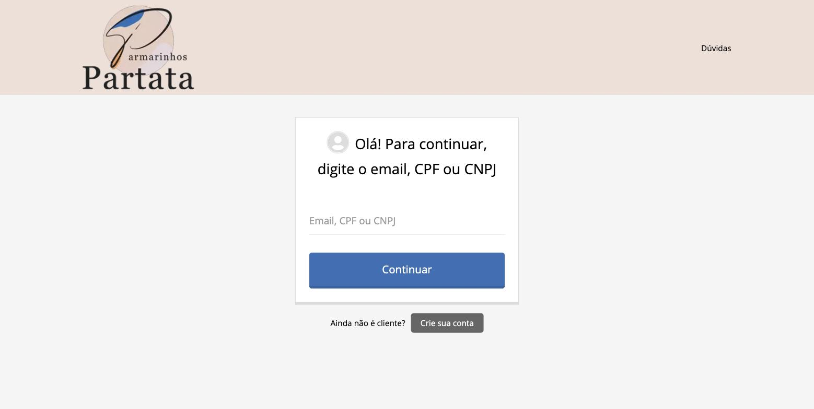
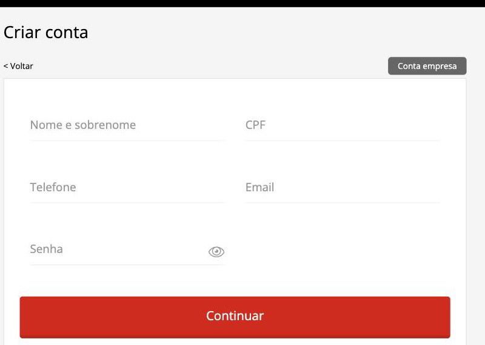
Esta é a maior diferença encontrada no teste — e a mais barata de corrigir.
No carrinho da Roma, entre a linha do Subtotal e o botão Prosseguir para Pagamento, há um bloco vermelho com o título "Atenção" e o texto "Já conferiu se todos os itens estão corretos? Pedimos que confira atentamente os itens selecionados antes de efetuar o pagamento para evitar transtornos com trocas e devoluções." Ele ocupa 494 pixels. No Armarinho São José, essa mesma distância é de 69 pixels — o botão vem logo abaixo do subtotal. São 7 vezes mais espaço, e o que está nesse espaço é um alerta de problema.
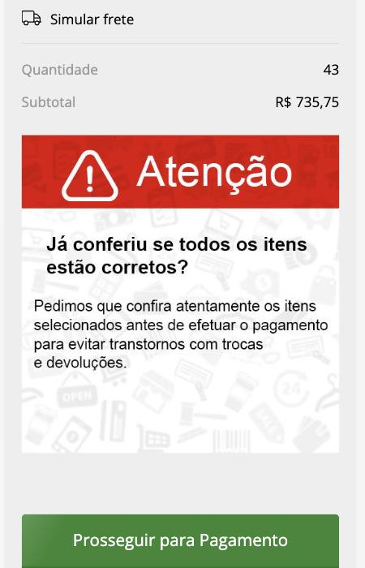
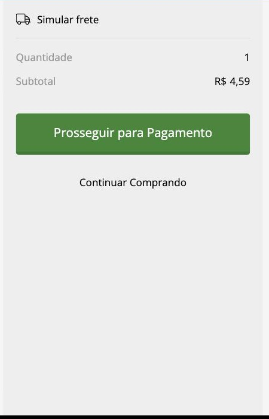
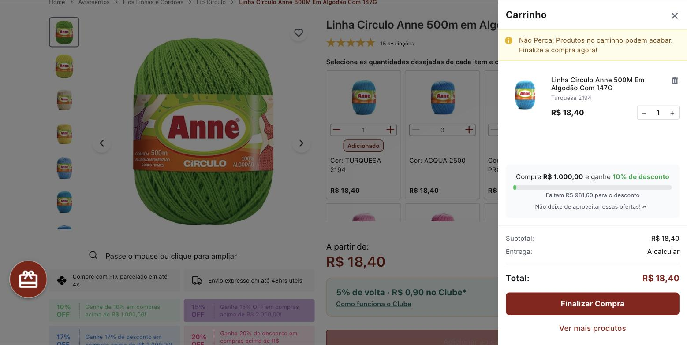
Distância medida por código, do topo da palavra "Subtotal" ao topo do botão de pagamento, na mesma tela e mesmo navegador. O Aviamentos São Paulo também tem um aviso ali, mas é um texto de três linhas — não um banner com imagem de fundo.
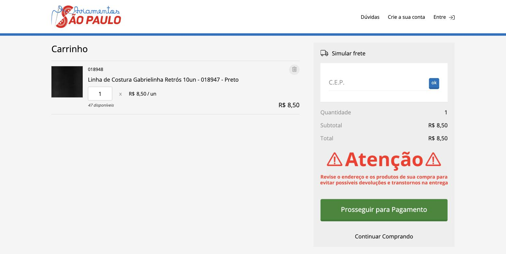
Ladeira Armarinhos, São Paulo — o carrinho que empurra para a frente em vez de puxar para trás.
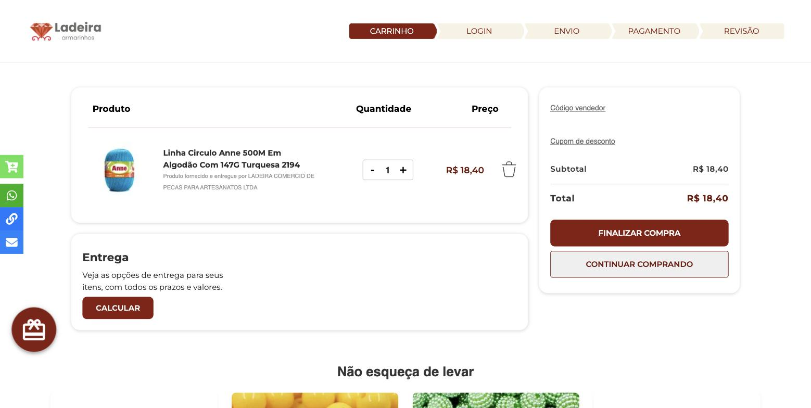
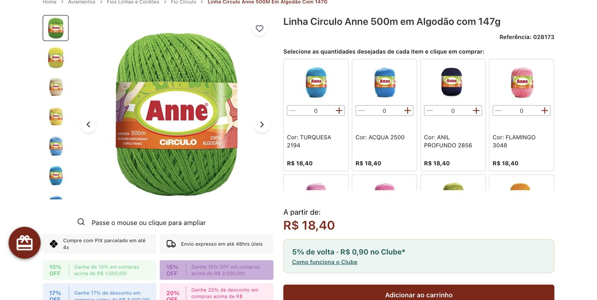
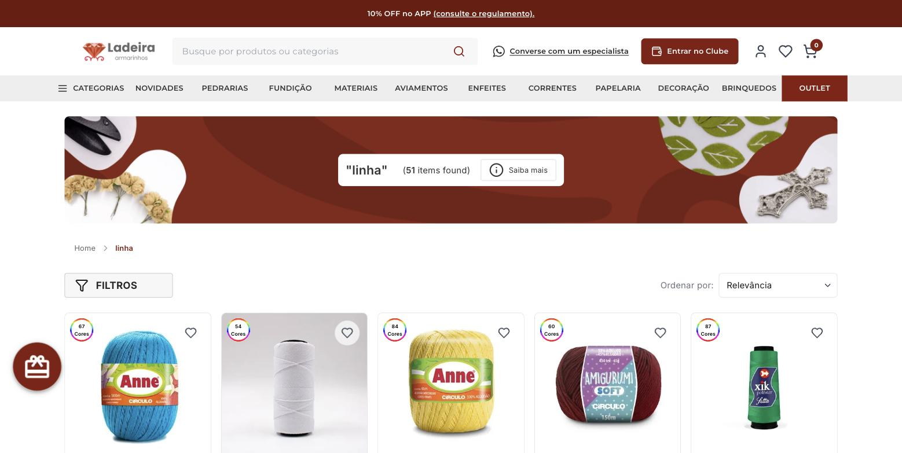
Linha Anne Círculo 500m, 147g, algodão mercerizado — item idêntico, medido no mesmo dia.
A Roma está 21,9% acima do Ladeira e 2% acima do São José nesse item. Com os 5% do Pix, a Roma cai para R$ 21,31 — ainda 15,8% acima. Mas isso não vale para o catálogo inteiro: num levantamento de dez produtos Círculo contra o Armarinho São José, a Roma é mais barata em sete deles (Anne Brilho −15%, Fio Náutico −15%, Amigurumi Pelúcia −11%). O preço da Roma é competitivo; o que não dá para sustentar é ser a mais cara justamente no item mais procurado da categoria.
| Loja | Cartão | À vista | Extra |
|---|---|---|---|
| Roma | até 5x | 5% off no Pix | — |
| Armarinho São José | até 12x (3x sem juros) | Boleto e Pix | 2ª via de boleto na central de ajuda |
| Ladeira | — | PIX parcelado em até 4x | Cashback 5% no clube + escada 10/15/17/20% por volume |
| AF Aviamentos | — | — | Cashback de 5% em toda compra, mostrado no produto e no carrinho |
O teste não achou só problema. Estas são vantagens reais, e vale defendê-las.
A Roma tem os dois botões na tela de identificação. O Armarinho São José e o Partata não têm nenhum — o cliente deles só entra digitando e lembrando a senha.
Na Roma e no São José a compra fecha com qualquer valor. No Ladeira, o pedido só avança a partir de R$ 50,00 — o teste bateu nessa trava com um carrinho de R$ 18,40.
A Roma oferece "Simular frete deste item" antes do carrinho. O São José só calcula depois que o produto já está no carrinho.
Princess, Sanding, Fofurinha, Violin, Xikkye e RomaBond. Nenhum concorrente do teste tem uma linha própria comparável — é ativo que ninguém copia e que hoje aparece pouco na loja.
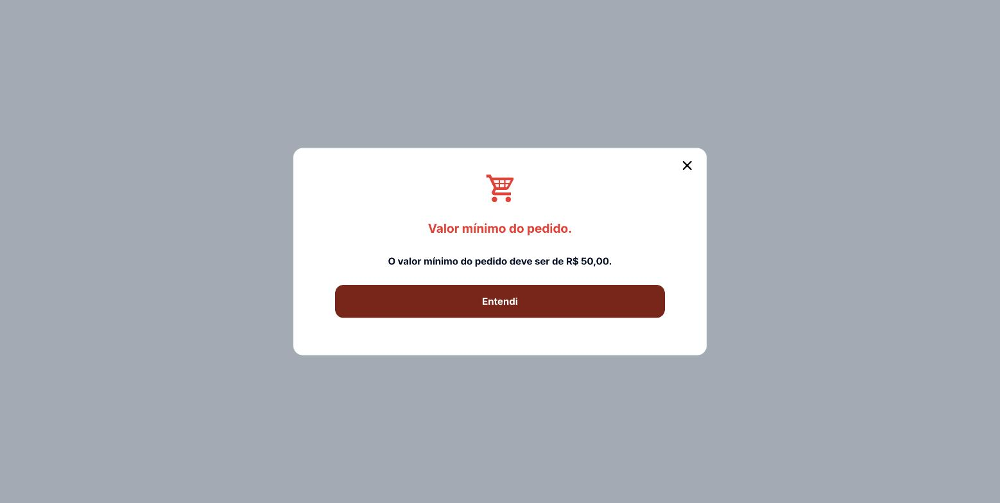
Medidas na mesma categoria e no mesmo dia.
A página de produto testada na Roma tem zero avaliações — cinco estrelas vazias e um convite para "Avaliar produto". A mesma linha no Armarinho São José tem 148 avaliações; no Ladeira, 15.
No produto testado — Linha para costura resistente 50, 5.000 m, tex 50 — as 10 cores aparecem na lista como 22327.verm35, 22327.bege68, 22327.bco67: código de estoque, sem nome legível e sem foto. O Armarinho São José entrega 196 cores com nome ("000- Branca", "005- Jasmim") e foto do cone. O Ladeira, 67 a 87 cores com foto do novelo real.
Na categoria Linhas de Costura da Roma: 34 produtos, 9 esgotados (26,5%). Na mesma categoria do Armarinho São José: 43 produtos, nenhum esgotado.
Ao abrir o carrinho da Roma, a primeira coisa na tela foi um erro: "Fita Gorgurão Poá Princess ... não possui a quantidade desejada. Quantidade disponível: 2", com um botão ATUALIZAR que precisa ser clicado antes de qualquer outra coisa. Quem chegou ali com a compra pronta encontra um problema, não um caminho.
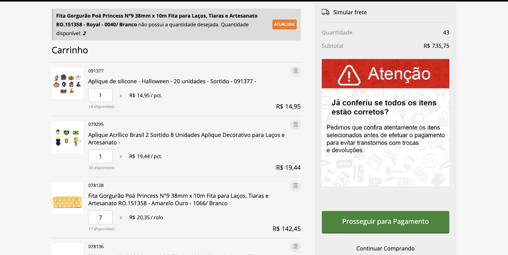
Em ordem de esforço. As duas primeiras não dependem de desenvolvimento.
Ou, no mínimo, reduzi-lo a uma linha de texto discreta como faz o Aviamentos São Paulo. No lugar dele, colocar o que o cliente quer ver ali: o frete já calculado ou o valor que falta para um benefício.
Carrinho → Identificação → Entrega → Pagamento. O cliente que sabe quanto falta desiste menos. O Ladeira faz isso e é a diferença entre "vou ter que me cadastrar" e "faltam três passos".
Trocar "Ainda não é cliente? Crie sua conta" por algo como o AF: "usamos seus dados para achar seu cadastro ou criar um para você". E dar destaque aos botões de Google e Facebook, que a Roma já tem e os concorrentes não.
Levar para as linhas de costura a grade que o Fio Anne já tem: trocar 22327.verm35 por "35 - Vermelho" com a foto do cone. E mostrar na listagem quantas cores o produto tem, como o Ladeira faz.
Zero contra 148 do concorrente. Um disparo para a base de quem comprou nos últimos 90 dias resolve parte disso em uma semana.
5x contra 12x do Armarinho São José. Em compra de ateliê e revenda, o número de parcelas decide.